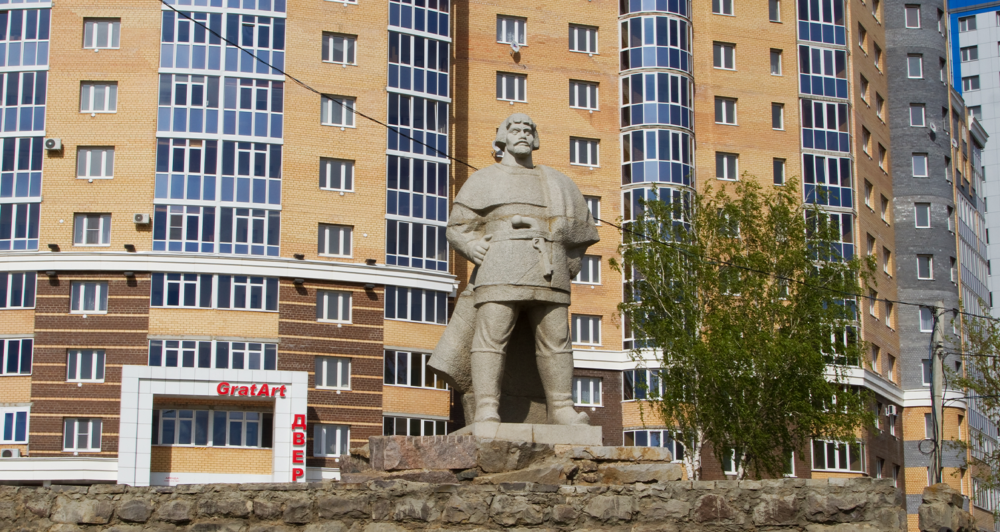

Памятник Емельяну Пугачeву
Памятник Емельяну Пугачёву установлен на месте, где в 1774 году с 27 июня по 3 июля находилась ставка повстанческих войск под предводительством Пугачёва, сразу после захвата города. Пугачев освободил крепостных, раздал своим войскам реквизированные богатства, и обдумывал план дальнейших действий
Памятник Пугачёву установлен в городе Саранск на улице Волгоградская в историческом районе города — Посоп в 1985 году. Автором монумента является скульптор и живописец Г. Гликман. Памятник высечен из белой гранитной плиты.